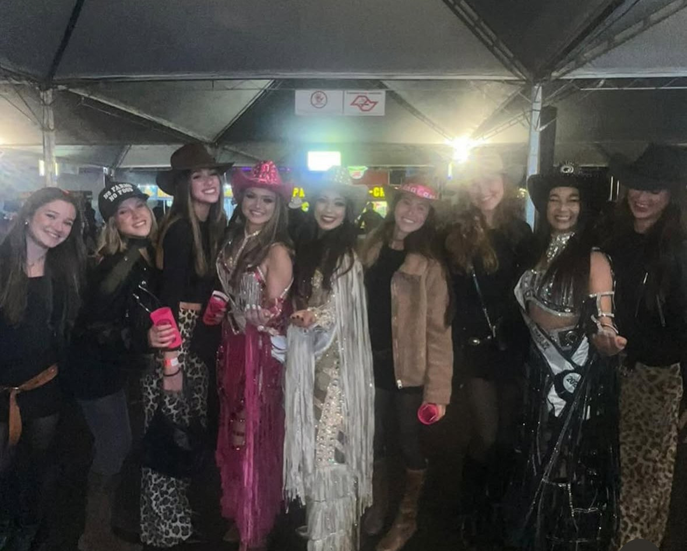
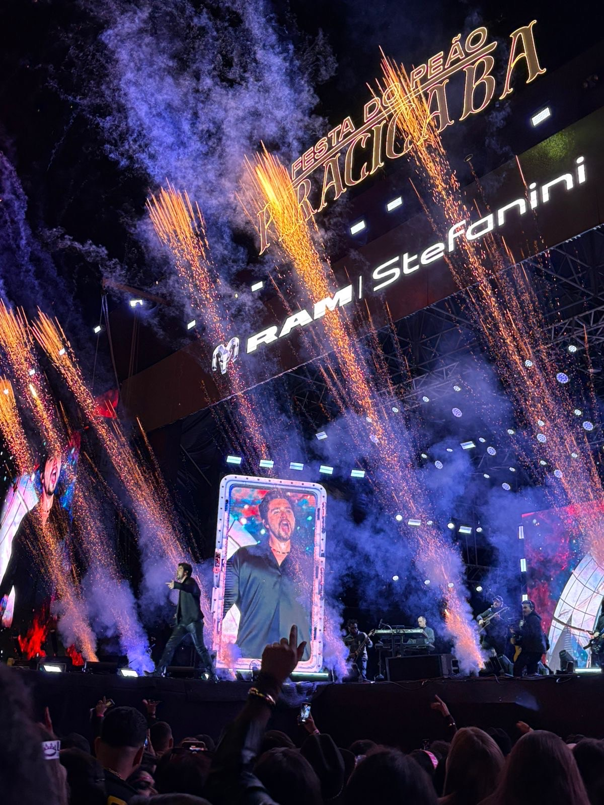
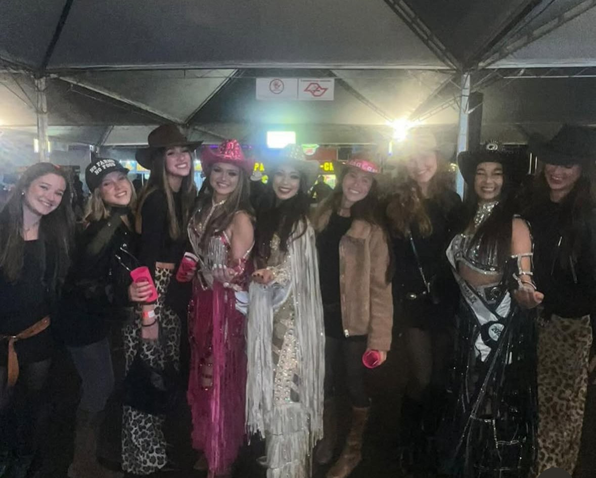
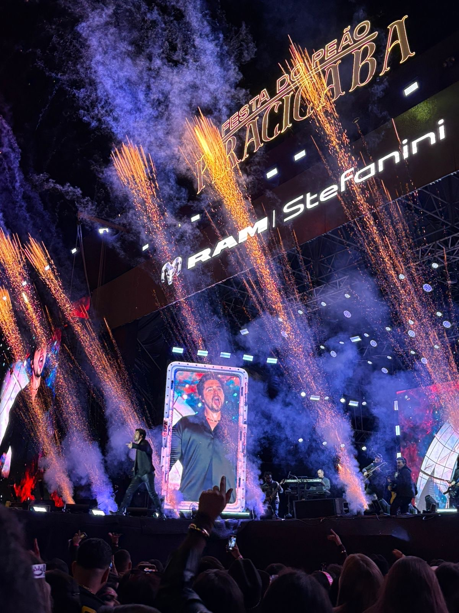

O rodeio é um evento tradicional que encanta pessoas de todas as idades, repleto de atrações divertidas e típicas das cidades do interior.
É um verdadeiro festival da cultura sertaneja, onde o espírito da vida no campo se manifesta em cada detalhe. Durante os dias de festa, o público pode aproveitar uma programação variada, com atividades emocionantes e para toda a família.
Entre os destaques, estão as touradas, que chamam a atenção pela coragem dos peões e pela vibração da plateia. Também fazem parte do espetáculo as corridas de tambor, uma prova de velocidade e habilidade a cavalo que encanta com sua agilidade e precisão. A montaria em touros é um dos momentos mais aguardados, sempre carregada de adrenalina e emoção. Já as provas de laço mostram a destreza dos participantes, que demonstram técnicas tradicionais dos vaqueiros com muita habilidade.
Além das competições, o rodeio também oferece espaço para o lazer e a diversão das crianças, com brincadeiras típicas de festa junina, como pescaria, jogo de argolas, corrida do saco, boca do palhaço, entre outras atividades lúdicas que resgatam o clima das festas populares do interior. Barracas com comidas típicas, música ao vivo e danças tradicionais completam a experiência, criando um ambiente acolhedor e festivo.
Mas é claro, a parte mais esperada por muitos é a programação de shows de música sertaneja. Grandes nomes do cenário nacional se reúnem em um palco vibrante, incendiando a arena com alegria, emoção e muito som. Os shows são um verdadeiro espetáculo à parte, unindo gerações e criando momentos inesquecíveis. É o lugar perfeito para curtir com os amigos, cantar junto os maiores sucessos e, claro, beber uma boa gelada enquanto a energia contagiante da música toma conta de todos.
Participar de um rodeio é mais do que assistir a um evento — é viver intensamente a cultura sertaneja, celebrar tradições e aproveitar cada segundo de uma festa feita com alma, emoção e muita diversão.
Voltar para home page